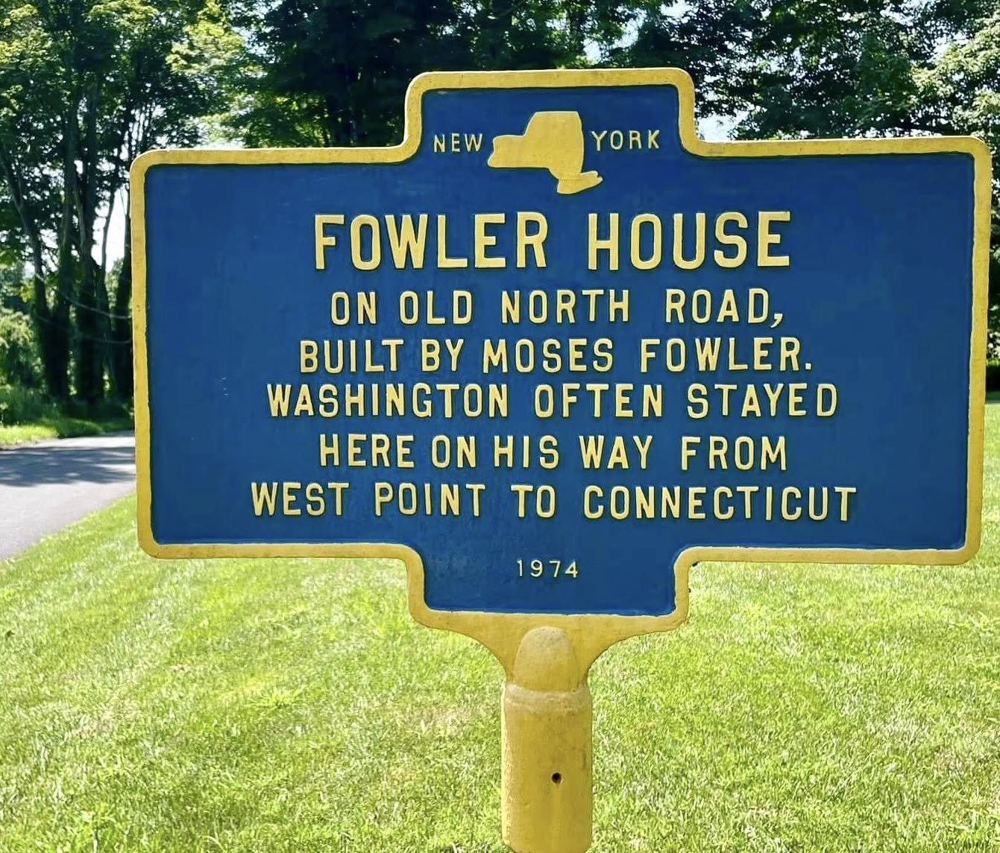
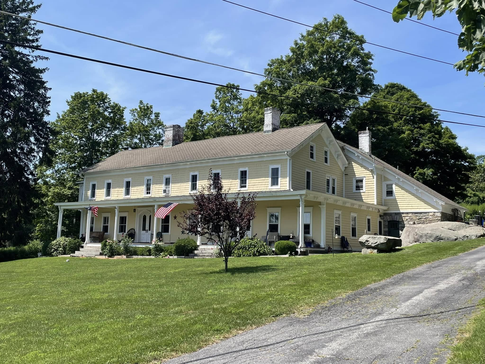

Fowler House
An 18th-century farmhouse on Old North Road, said to have hosted Washington’s troops during the Revolution.


FOWLER HOUSE
On Old North Road,
built by Moses Fowler.
Washington often stayed here
on his way from West Point
to Connecticut
About this Marker
The Fowler House is one of the oldest surviving houses in the Town of Southeast. According to the 1897 Commemorative Biographical Record of the Counties of Dutchess and Putnam, New York, the house was built around 1739 by Moses Fowler, an early settler whose family farm covered the high ground between today’s Simpson Road, Root Avenue, and US Route 6. The wood-frame Colonial structure has remained in continuous private residence for more than two and a half centuries.
The marker’s assertion that “Washington often stayed here” rests on long-held local tradition rather than on extensive primary documentation in the published Washington papers. What is more substantially documented — and recorded in the 1897 Commemorative Biographical Record — is a striking account of Continental troops quartered at the Fowler farm during the Revolution. According to the 19th-century record, Moses Fowler’s wife, Mary Brundage Fowler, kept her oven hot day and night to feed the troops, and fed them through a kitchen window under what the source describes as Washington’s direct instruction:
Mrs. Fowler keeping her oven hot day and night during their stay in order to supply their needs. She fed them through a window as directed by Gen. Washington, for, on account of their long abstinence from food, they might have eaten too much if they sat down to a full meal. Many of the soldiers died from privations, which they had previously undergone and they were buried on the farm.
— Commemorative Biographical Record of the Counties of Dutchess and Putnam, New York, 1897.
The same kitchen window is reportedly still visible at the house. The current resident, Richard Ruchala, has shown visitors the aperture believed to be the one described in the 19th-century account.
The Question of the Buried Soldiers
That last clause of the 1897 record — “they were buried on the farm” — raises a question that has not been definitively resolved. The Town of Southeast Historian’s office has flagged the report as a credible but unverified claim. The current property owner is unaware of any burials. The nearby Fowler family cemetery sits adjacent to the house, and John Duncan — commander of American Legion Argonne Post 71 and a Town Historic Sites Commissioner — has documented a boulder at the cemetery that suggests some soldiers may rest there in graves marked only by uncarved stones. Whether “many” Continental troops are still buried somewhere on the farm, were reinterred elsewhere after the war, or whether the 1897 report was based on family memory or hearsay that has been embellished over time, remains an open question.
If true, the marker on Old North Road commemorates one familiar story — Washington’s visits — while a much less familiar one — the unmarked graves of soldiers who never made it back to their hometowns — may still be on the ground beside it.
(near Simpson Road and US Route 6)
Town of Southeast, NY
Sources
- On-site photograph of the New York State historic marker (1974).
- J.H. Beers & Co. (publishers), Commemorative Biographical Record of the Counties of Dutchess and Putnam, New York: Containing Biographical Sketches of Prominent and Representative Citizens, and of Many of the Early Settled Families (Chicago, 1897). Public domain; available via HathiTrust and Google Books.
- Town of Southeast Historian (Facebook), “Revolutionary War Soldiers Buried at Fowler House Farm.” Contemporary documentation of the unresolved soldier-burial claim, including reporting on the kitchen window where Mary Brundage Fowler fed the troops, current resident Richard Ruchala, and the boulder at the Fowler family cemetery documented by John Duncan of American Legion Argonne Post 71.